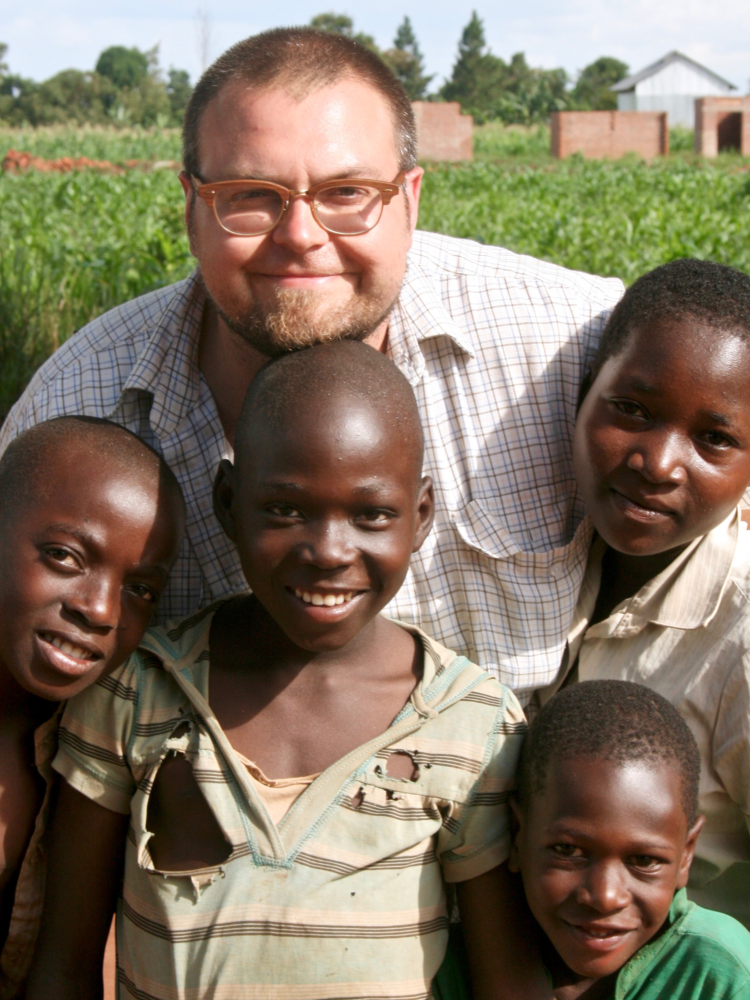

Nathan Brown, United Kingdom “This was the most adventurous, beautiful, emotional, rewarding, and magical experience of my life. The love and kindness of Mama Jane and her extended family makes you reflect on who you are. Watching their struggle put into perspective the 1st world problems we complain about.”
Pooja, United States “My time in Uganda has changed my life in more ways than I count. I found a second family with Mama and the children. I don’t know if I will ever have the right words to express how much the orphanage means to me.”
Lily, United Kingdom “Mama Jane has created a beautiful home and school for the children. I felt privileged to be a part of making the world a happier place with OHU. When I first arrived it was the warmest welcome and each day I saw how happy and full of life the children were. Uganda, Mama, and the children were life-changing.”
Shir, Israel “I learnt so much from my time in the village. It reflected on my very different life in the western world and it influences me until today.The willpower I saw from these children is something that I have not experienced before.”
Lucy, Australia “My time at the Orphanage was an incredible experience, one which I will hold dear to my heart for the rest of my life. I was welcomed with open arms by Mama Jane and the children. Through fundraising and access to support networks, volunteers can provide an enormous change for the daily struggle that the adults and children in their care experience. Spending time to get to know each of the children's unique characters was invaluable. After leaving, I missed their energy, strength and of course, their cuddles.”
Mason, United States “It was wonderful to be part of the family at the orphanage. Playing with the children, assisting with the chores, it all helped to teach me about simplicity and what holds true meaning. The memories of the children will remain in my heart and I will always have roots to go back to at OHU.”
Ben, Australia “My time at OHU was relatively short but most memorable; barely a day goes by where that place, the kids and all the people I met don't enter my thoughts. Kyankwanzi district is lush and beautiful and worth exploring.People in the village and the orphanage live very simply, juxtaposed against the complexity, cultural nuances and chaos of Uganda at large. “
Ofek, Israel “The time I spent with the kids was so meaningful to me. They taught me about honor, friendship and the will for learning. Ms. Jane is doing the most amazing thing a human can do: she gave up on her own dreams and devoted herself to help the kids of Uganda.I truly appreciate the opportunity I had to take a little part in Jane and the kids' lives!"
Alvis, Australia (e-volunteer) “The moment I heard about OHU I was quite surprised that there is a group of kind-hearted people spending their time and money on helping a small village. I feel grateful for being able to apply my skills to contribute to the project.”